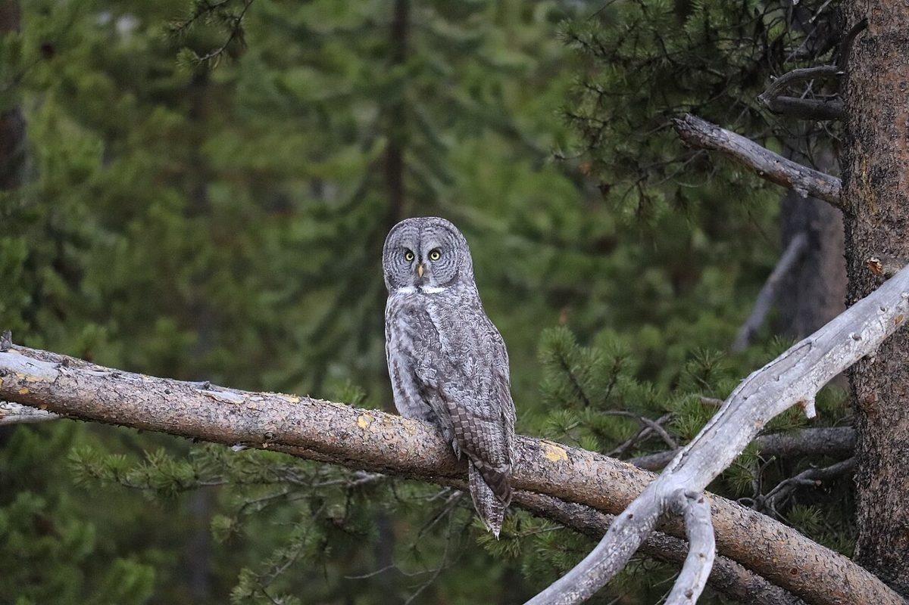
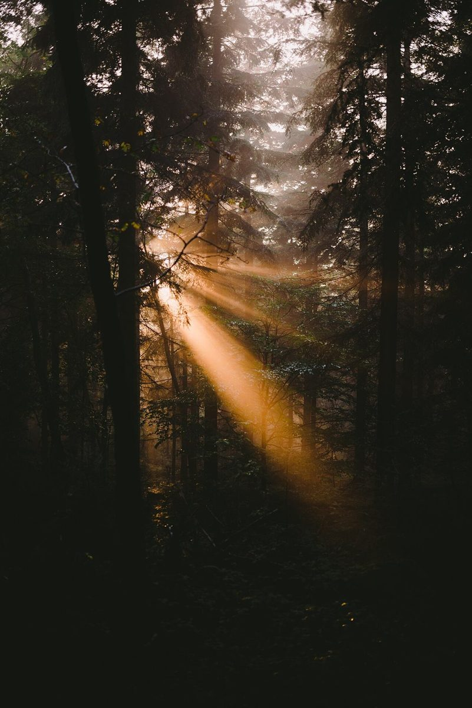
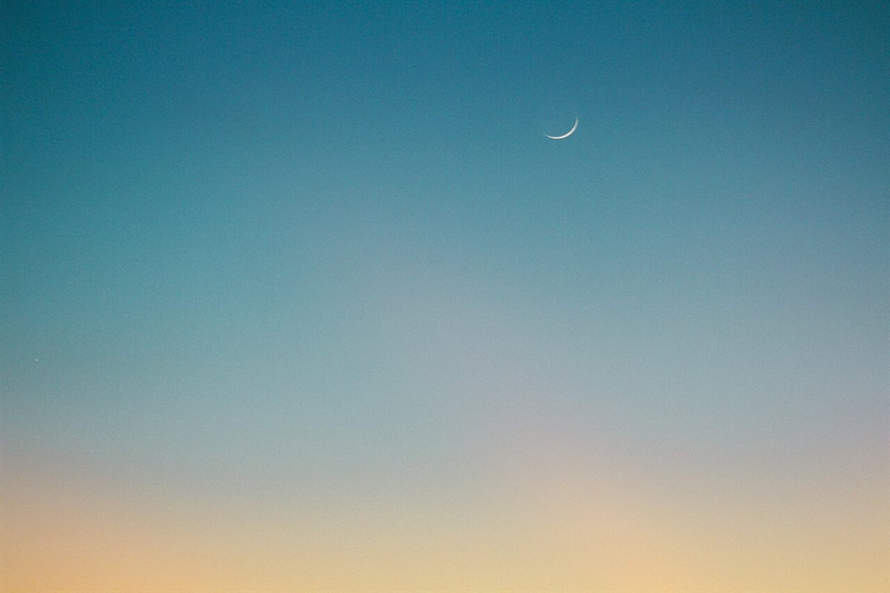

ふくろうの時間
カフェ / 福岡県柳川市
福岡県柳川市西浜武にあるカフェ「ふくろうの時間」のご案内ページです。営業時間やメニューなど、詳しいことは準備中。まずはInstagramをのぞいてみてください。

制作側の連想
屋号から「うろ」を思い浮かべました
お店の名前の由来は分かりません。制作側は「ふくろう」という言葉から、鳥のすみかになる木のうろ(幹のくぼみ)を連想し、このサイトを「うろの丸窓から外をのぞく」作りにしました。写真は丸い窓のように切り抜いています。お店の理念や由来とは無関係の、制作側の連想です。
うろの丸窓(イメージ)
のぞいてみる、三つの窓。
写真はお店や柳川市のものではありません。雰囲気を伝えるための、国外・撮影地不明のフリー素材です。

撮影地不明のイメージ 
撮影地不明のイメージ 
撮影地不明のイメージ